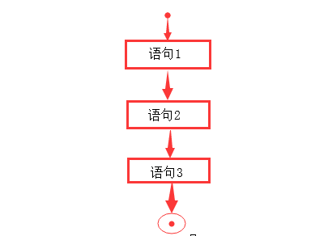
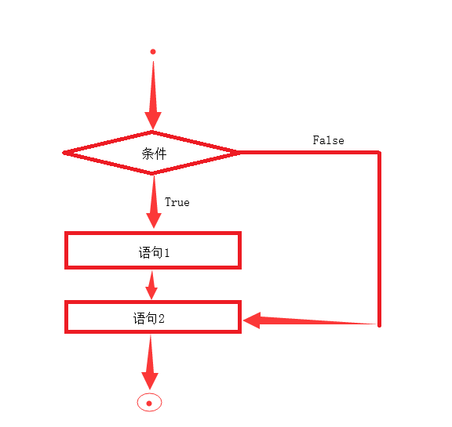
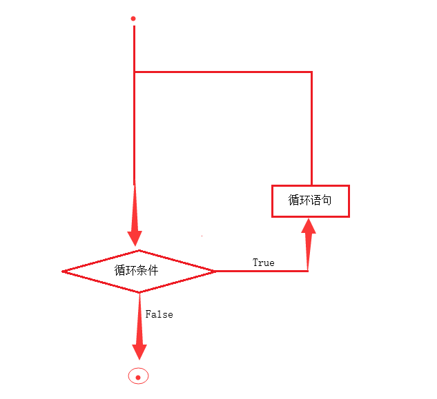

#7 Python顺序、条件、循环语句
上一节讲解了Python的数据类型和运算，本节将继续深入，涉及Python的语句结构，相当于Python的语法，是以后编写程序的重要基础！
一、顺序语句
顺序语句很好理解，就是按程序的顺序逻辑编写程序即可，例如： 1
2
3name = input('Please input your name:')
print('I am ', name)
1 | # 输出结果 |
上面代码展示了很标准的顺序语句，逻辑结构如下：

二、条件语句
每当你的程序需要做出选择，就要使用条件语句了，条件语句通过判断条件的真假来决定执行的代码块，先来看条件语句的逻辑结构：

由上图可以看到，当条件为True是，执行语句1和语句2，当条件为False时，只执行语句2，这就是条件语句的迷人之处
代码块
细心的小伙伴可能已经发现上面的新名词：代码块。每一种编程语句都有其独特的代码块，在Python中，用缩进来控制代码块
1 | name = input('Please input your name:') |
从上面的代码中可以明显的看出代码块的存在，第4行和第5行是条件为真的代码块，第7行是条件为假的代码块。
在Python中，用4个空格或者Tab来缩进，但要注意：整个程序中只能使用一种缩进格式，不能混着使用，否则会提示缩进错误。
单条件
铺垫了这么多，也该引出Python条件语句的语法了吧。在Python中，条件语句使用 if......else...... 格式表示条件语句，其形式为： 1
2
3
4if 判断条件:
条件为真代码块
else:
条件为假代码块
其中，else为可选语句，条件为假什么都不执行的时候可以将其省略不写，看下例：
1 | name = input('Please input your name:') # 输入你的名字 |
1 | # 输出结果 |
1 | flag = True |
1 | # 输出结果 |
多条件
有小伙伴肯定会问，需要判断多个条件时岂不是要写多个 if 语句。其实在Python中，多条件的判断是有其独特的语法的，使用 if......elif......elif......else...... 即可，其形式为：
1 | if 判断条件1: |
其中，else为可选语句，条件为假什么都不执行的时候可以将其省略不写，看下例：
1 | num = 20 |
1 | # 输出结果 |
条件语句嵌套
条件语句是可以嵌套的，在实际使用中应该灵活应用：
1 | num = 20 |
1 | # 输出结果 |
三元运算
1 | 条件为真的结果 if 判断条件 else 条件为假的结果 |
举例就明白了：
1 | num = 1 if 1 > 2 else 5 |
简单语句组
对于小代码块可以写在一行，更加美观，例如：
1 | num = 100 |
虽然美观，但并不推荐大家使用
三、循环语句
循环语句的出现，可以说是真正的解放人力，计算机的优势很大程度上依赖循环，先来看看循环语句的逻辑结构：

从上图可以看出，只要循环条件为真，那么循环语句就会被执行多次，Python语言中存在两种循环，一起来看看吧
for循环
for循环主要起到遍历元素的作用，第一次接触可能觉得怪怪的，不要担心，用熟了你就会发现for循环非常方便，先来看个例子：
1 | for num in range(10): # 遍历整数， |
1 | # 输出结果 |
从上面代码可以看到for循环作为迭代工具使用相当强大。
for循环可以和else配合使用，else的代码块会在for循环结束后执行，例如：
1 | for element in ['Python', 'C', 'Java']: # 遍历列表 |
1 | # 输出结果 |
对于上面的代码，萌新肯定还有疑问，为什么是num、letter、element？ 关键字 in 是什么？
num、letter、element是自己随便起的变量名，可以更改，换成 i、p随便什么都行，只要符合变量的命名规则就行，关键字 in ，就是在里面的意思，用代码解释更容易理解：
1 | In [1]: 5 in range(10) |
通过这段代码应该就可以理解了
while循环
while循环是真循环，而不像for循环主要起遍历作用，其形式为：
1 | while 循环条件: |
其中，else为可选语句，条件为假什么都不执行的时候可以将其省略不写，看下例：
1 | num = 5 |
1 | # 输出结果 |
无限循环：在Python中，使用while True: 循环内容即可实现无限循环：
1 | num = 0 |
执行后就会发现屏幕上不停的跑数字而不会停止，想要停止按下键盘 Ctrl + C 来强制停止。
while循环也有简单语句组，同样也不推荐使用
循环语句嵌套
循环语句之间也是可以嵌套的，两种循环语句既可以独立嵌套，也可以互相嵌套，看例：
1 | # for循环嵌套 |
1 | # 输出结果 |
1 | # while循环嵌套 |
1 | # 输出结果 |
1 | # while 和 for 循环嵌套 |
1 | # 输出结果 |
以上就是循环的嵌套，在实际运用中应该灵活使用循环的嵌套，往往会带来事半功倍的效果!
循环控制语句
接下来的三个关键字起到循环控制的作用，分别是break，continue，pass
break
中断循环，也称为跳出循环、结束循环，在循环过程中，遇到break，就会跳出这个循环，看例：
1 | num = 0 |
1 | # 输出结果 |
由上面代码可以看到，循环过程中一但遇到break，就会跳出此循环，即使是无限循环也不顶用
continue
继续循环，也成为跳过本次循环，在循环过程中，遇到continue，会跳过本次循环，继续下一次循环，看例：
1 | num = 0 |
1 | # 输出结果 |
由上面代码可以看到，有两次循环被跳过，只输出了3次“我正在循环”，也可以看到continue并不会跳出循环，循环还会继续执行
空语句 pass
空语句其实是有语句的，pass代表空语句，程序遇到pass什么也不会执行，仅仅是路过，有时为了保持程序的美观、完整性，通常会用pass占位，有时没想好程序怎么写，也用pass占位，什么都不写的话程序会报错，就好像写作文想好了小标题，却没想好内容写什么的时候，可以用pass代替内容，想好后再作修改。
1 | def func(): |